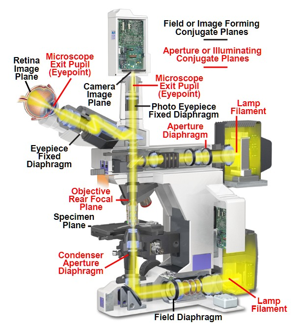
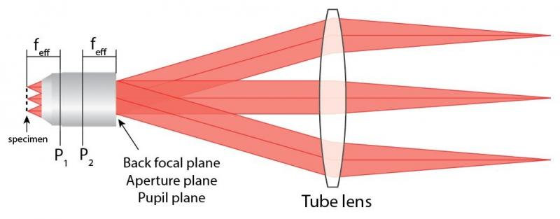
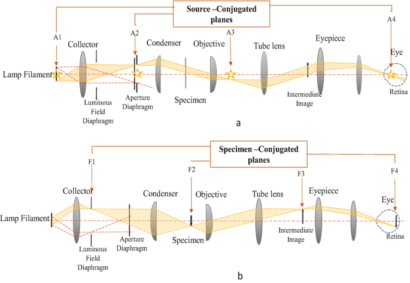
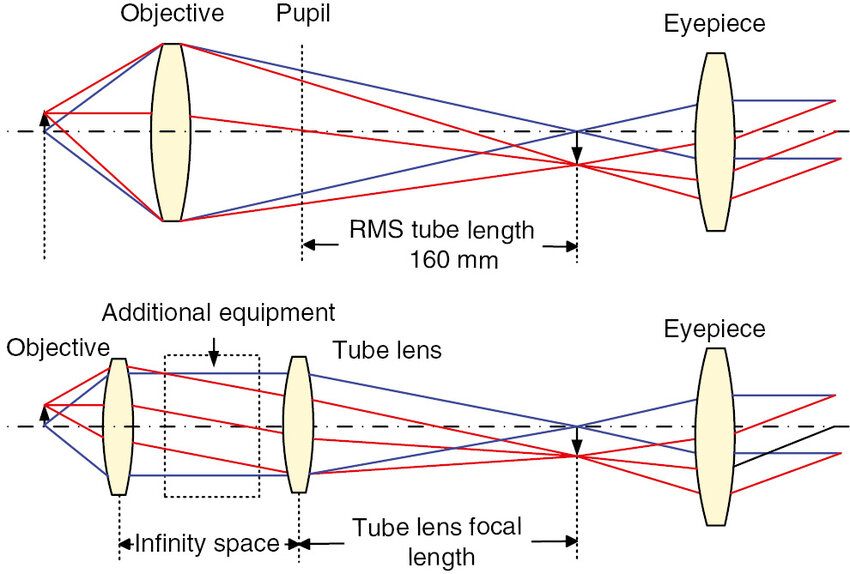
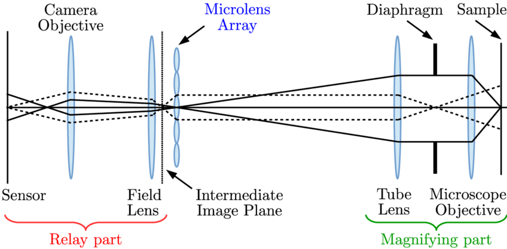
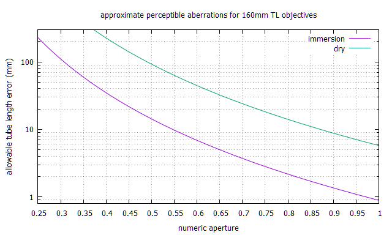
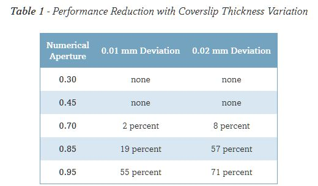

back

Microscope BasicsFAQ: How can I hook a microscope objective to my camera? - internal vs external; brightfield vs darkfield - Köhler illumination - diascopic (thru specimens) vs episcopic (above objects):  compound microscope with both episcope and diascopic illumination Vignetting - infinity microscopeRays from an infinity objective are only parallel when from a single point;with increasing distance between objective and field lens, a larger field lens is needed to avoid vignetting:  An objective's back focal plane is where parallel rays entering that objective focus. Conjugate Planes - Compound microscope raysWorth watching: Abbe's experiments and conjugate planes
Floaters
Note that Lamp Filament conjugate plane (A4) is inside the eye:   Vitreous Strands are liable to be illuminated. Different eyepiece relief can move Lamp Filament conjugate plane, affecting floater visibility. Finite vs infinity objectives; corrections, N.A., image circleTo prime your thinking about lenses and ray diagrams, review this explanation by Bill Otto.The resolving power of an objective on the subject depends only on its N.A., not magnification You can use a 20x 0.75 infinity objective at 40x with a 400mm tube lens, with no degradation relative to a purpose-built 40x 0.75 with a 200mm tube lens. At their specified focal length, objectives vary by useful field circle diameter. Before 1980, 18mm was typical; modern Nikon Plan objectives can be 22mm or more.  Finite-conjugate microscope system vs. infinite-conjugate microscope system with tube lens. from: Systematic design of microscope objectives A finite objective's correction is designed for that tube length, with many objectives also depending on both coverslip glass and eyepiece for corrections. More explanationThe upper diagram approximates traditional (RMS == Royal Microscope Society) microscopes;with Pupil also called objective's rear conjugate or back focal plane;"tube length" approximates objectives' focal length for specified magnification, if that objective was a simple convex lens. The lower diagram, which is nominally about more modern microscopes, is arguably also more accurate for some "finite" microscopes, if Objective + Infinity space + Tube lens are considered together as a compensated "finite" objective.While infinity objectives may be used with a tube lens of any focal length, specified magnification depends on that focal length. Contrast and non-image-forming light.While lenses focus images on your retina or other sensor,they do not prevent other photons from also stimulating sensors. When viewing a three-dimensional scene, perhaps focusing on a near object, photons scattered from more distant objects may also land on the same photosensors. Properly (Köhler) aligned conjugate image and illumination planes also improve contrast. Some non-image-forming light can be blocked by an iris diaphragm, as in this diagram:  Ignore Microlens Array. Relay part is afocal photography, where Field Lens is the eyepiece or ocular. Lens formulaesimple1/f = 1/do + 1/di {1} di becomes
f for infinite do
m = di/do {2}
zero magnification for lens focused @ infinity
magnification change by focus distance f = (d2 - d1)/(m2 - m1); {3} alternatively:
d2 = d1 + f*(m2 - m1)
m2 = m1 + (d2 - d1)/fmagnification for classic (RMS) compound microscope m = (L/fo)*(D/fe),...where: m = magnification
L = tube length (160mm)
D = normal vision relaxed distance (250mm)
f = focal length
fo = objective focal length
fe = eyepiece focal length
di = lens to image distance
do = lens to object distance
For 160mm tube length, a 10x objective has 16mm focal length and a 10x eyepiece has 25mm focal length. For infinity scopes, substitute "tube lens focal length" for "tube length". Olympus infinity objectives expect 180mm tube lens focal length; Nikon finite CF BD and M Plan objectives expect 210mm tube length. AberrationsLens aberrations are mainly from incorrect geometries and diffraction changes with wavelength.
Aperture
m * lens aperture
(m+1) * lens aperture
x * lens aperture
m / (2 * N.A.)equivalent e.g. "How does a 4X N.A. 0.1 objective compare to an f/whatever macro lens?" f=1/(2*N.A.) is not a bad approximation.f=1/(2*N.A.) * M/(M+1), where M is rated magnification.
numeric: N.A. = n * sin(α), where n is (1.0 for air) index of refraction

"pupil ratio" compensates effective aperture for adding extensionaperture vs N.A. : |
| f/# | 1.2 | 1.4 | 1.8 | 2 | 2.8 | 4 | 5.6 | 8 | 11 | 16 |
| N.A. | .4167 | .357 | .417 | .25 | .1786 | .125 | .0893 | .0625 | .045 | .03125 |
Canon EF sensor-to-flange depth: 44mm
Add to extension tubes when testing lens focal lengthsCondensers: achro, aplanatic, Abbe; finite vs infinity
Tweaking Abbe condensersresolution = 1.22 * wavelength / (Objective_NA + Condenser_NA)Abbe flaws bother above N.A. 0.6-7; elevate an Abbe to optimize filling objectives' back aperture.
Depth-of-Focus scaling
DoF2 = DoF1 * (f/#2/f/#1) * (m1/m2)**2
Diopter vs focal length: divide into 1000mm, e.g. diopter = 2 for 500mm fl
Zerene macro step size tables:
magnification vs frame width, magnification vs aperture
m = sensor width / frame width
0.0022*(((m+1)*f/#)/m)**2
0.00055/(N.A.**2)
Zerene landscape focus tables
1:4 to 8:1 magnification FAQ

Objective standards - DIN: 45mm parfocal distance

Finite tube length error impact on aberrations
|
Tolerance goes inversely as N.A.^4:

gnuplot
More tube length discussion: Raynox DCR-150 tube assembly with flocking
Coverglass thickness error impact vs N.A.

Perhaps zero coverglass (metallurgical) objectives are more tolerant than coverglass-corrected.
Systematic impact suggests that modest aberrations (e.g. from wrong slide coverslip)
could be mitigated by deliberately changing tube length...
This would provoke magnification change and refocusing inconvenience.
Correcting eyepieces or tube lenses
Unlike e.g. Nikon or Olympus, Zeiss and Leica infinity objectives want proprietary tube lens corrections.The right combination of objective and eyepiece
Higher objective magnifications are increasingly liable to optical aberrations,
but greatly reduced in modern larger and more complex infinity objectives,
while earlier systems applied finite objective corrections in compensating eyepieces.
Even highly regarded apochromatic finite objectives were undercorrected for lateral color aberrations.
Perhpas lower power finite objectives have aberrations deliberately introduced for compatibility...?
Notes:
- "KPL" and "CPL" are Zeiss; "CPL" is "clinical plan" = good enough for eveyday routine use
- "C5" is a Zeiss C5X eyepiece recommended for achromats, not more highly corrected objectives.
- FK and NFK are Olympus
- CFW eyepiece is Nikon (no corrections or compensations)
- "DIC" is a Zeiss Epiplan objective;
relatively wide compatibility suggests that 0 coverslip objectives provoke fewer aberrations. - Hoff M is (probably Nikon CF-based) Hoffman modulation 40X
- "Neo" is Zeiss Neofluar
- "HD" is Zeiss Epiplan darkfield
- "Phase" is probably Zeiss (since compatible only with Zeiss KPL eyepiece)
With phase contrast optimized for green light, chromatic aberrations are less of an issue.
As might be expected, a CFW eyepiece (applying no corrections) worked poorly with most Zeiss,
but OK with a (perhaps Nikon CF-based) Hoffman modulation 40X.
Objective comparisons
20x is my favorite objective power.
Using AO Series 10
for objects without coverslips,
Olympus MSPlan objectives were the hot setup,
but I first acquired a cheap set of MEIJI S.PLAN M objectives.
While mostly using reflected illumination, transmissive calibration slides ease evaluations,
using coverslips according to objective engravings.
Captures by Sony α7 RII and Imaging Edge Desktop;
- M mode
- L:42M (7952 × 5304) 3:2 image size, Extra fine
- ISO 100
- Silent Shooting (>= 1/250 sec exposure, 1/14 sec readout across sensor)

- exposure time based on Imaging Edge Desktop Histogram

- White Balance: Incandescent
- Imaging Edge Live View focus using 27-inch Apple LED 2560x1440 Cinema Display.
Many APS-C sensors can more pixels in objective image circles, but
35mm sensor enables flexible (e.g. square and precisely centered) crop in post-processing.
Unlike too many Canons, Sony cameras get power from USB while tethered.
Although Bayer matrix camera sensor
captures red and blue channels every other row and column,
downscaling images 2x impacts sharpness.
Example crops near center from 42 megapixel image of 100x100 1mm grid @50x:
 original |
 2x downscale, then rescale |
 difference |
Infinity objectives by Nikon vs AO trinocular head vs telephoto lens;
CF finite objectives by direct projection.
| Eclipse | telephoto | AO trinoc | Direct CF |
|---|---|---|---|
 4x BE Plan |
4x BE Plan | 4x BE Plan | 4x B Plan |
 5x CF Plan BD |
5x CF Plan BD | 5x CF Plan BD | 5x CF MPlan |
 5x SPlanM |
5x SPlanM | 5x SPlanM | 4x CF Plan APO |
 5x MSPlan |
5x MSPlan | 5x MSPlan | 4x CF Plan APO |
 10x CF Plan BD |
10x CF Plan BD | 10x CF Plan BD | 10x CF ED Plan |
 10x SPlanM |
10x SPlanM | 10x SPlanM | 10x CF BD Plan |
 10x MSPlan |
10x MSPlan | 10x MSPlan | 10x CF BD Plan |
 20x CF Plan EPI |
20x CF Plan EPI | 20x CF Plan EPI | 20x CF M Plan DIC |
 20x SPlanM |
20x SPlanM | 20x SPlanM | 20x CF M Plan LWD |
 20x MSPlan |
20x MSPlan | 20x MSPlan | 20x CF BD Plan |
 20x CFi BD Plan |
20x CFi BD Plan | 20x CFi BD Plan | 20x CF ED Plan |
 20x UMPlanFl |
20x UMPlanFl | 20x UMPlanFl | 20x Plan APO |
 20x Ach no coverslip |
20x Ach | 20x Ach | 20x CF E Plan |
 40x Plan N no coverslip |
40x Plan N | 40x Plan N | 40x CF Plan |
- 100W Optiphot 2 eyepiece images are uncomfortably bright for < 20x; view with ND400
- Image circles are constrained by RMS thread for objectives < 10x power.
- Image circles are constrained by tube lens aperture for objectives > 10x power.
- 10x objective images are not circular when objectives are not parcentric with tube lens
- Sony α7-RII sensor is 35.9mm and 7952 pixels wide
- From
ImageJ - Analyze - Plot Profile, Olympus MSPlan 5x edges are > 10 pixels wide:
... while Nikon CF Plan Epi 20x edges are 6 pixels wide:
... the limit for minimal aliasing artifacts.
- From
- Image dynamic ranges are well within JPEG limits; no need for camera RAW.
- JPEG quality 85 reduces image sizes about 90% from Sony
Extra finewith imperceptible impacts.